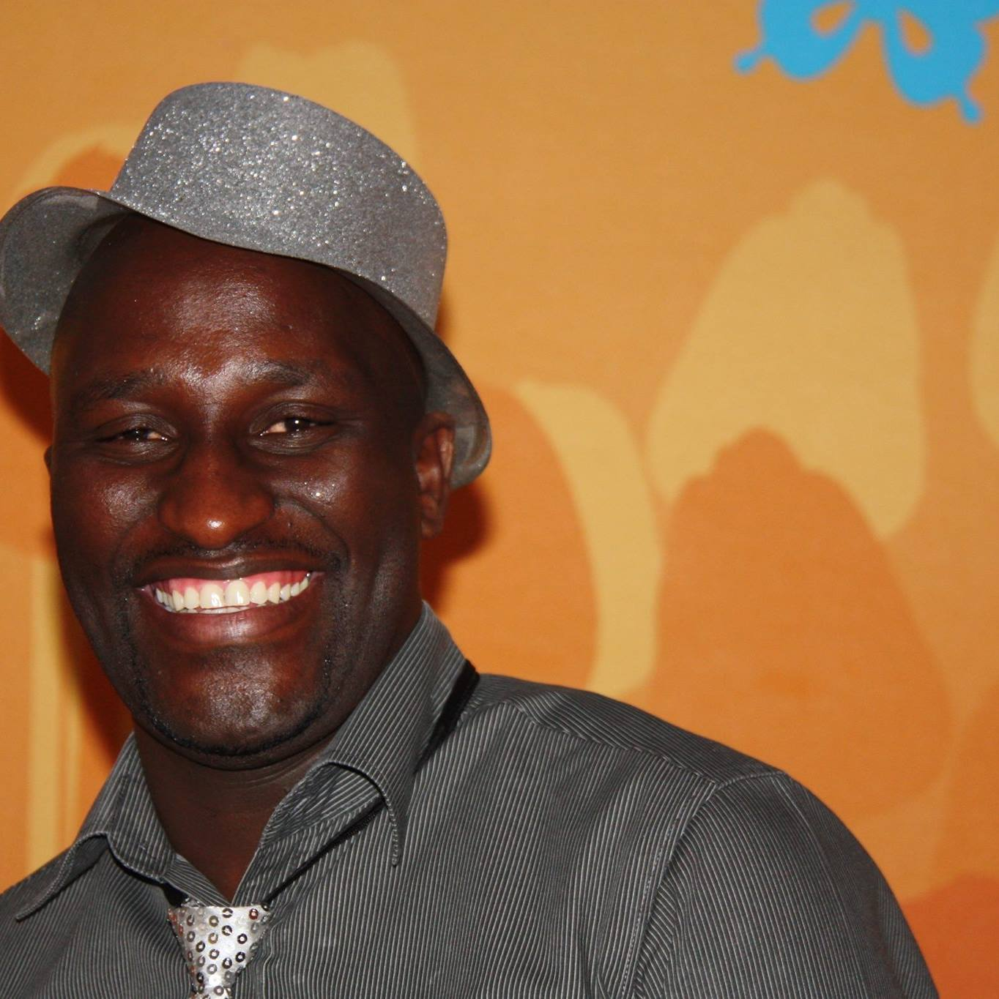

Resume of Dumile Simoki

Summarised profile
I am an aspiring Tech Specialist | I am a problem solver offering simple solutions to complex challenges | Experienced Business Leader | Extensive Experience in Complaints handling and client dispute resolution
Education
Bachelor of Commerce in Accounting Science
- Institution: University of South Africa
- Jan 2014 - Nov 2016
- Majors: Auditing; Financial Accounting, Managment Accounting and Taxation
BCom Honours: General Management
- Institution: University of the Western Cape
- Jan 2008 - Nov 2010
- Majors: Operational Management; Strategic Management; Financial Management; Economics
Bachelor of Commerce: Information Systems
- Institution: University of the Western Cape
- Jan 2000 - Nov 2005
- Majors: Information Systems, Management and Economics
Employment History
Sanlam Indie, Tygervalley — Operations Lead | Operational
Compliance and Risk Verification
NOVEMBER 2019 - PRESENT
- Leading a Team that handles Claims for Sanlam Indie; Formulating
Claims Strategy and process improvements
- Responsible for planning and executing Anti-Money Laundering; Client
Due Diligence; Underwriting Risk Verification and Change Management
- Recruitment of new employees, Performance Measurement and Coaching
of staff
RMB Private Bank, Tygervalley — Private Banking Analyst
JANUARY 2019 - OCTOBER 2019
- Responsible for Private Wealth Clients at RMB Private Bank
- Secured and Unsecured Credit | Wills | Fixed Term Savings | Off-Shore
investments
Capitec Bank, Bellville — Manager: Complaints & Service
Recovery
OCTOBER 2012 - DECEMBER 2018
- Lead & Manage the Complaint Management and Service Recovery Teams
- Acted as a Liaison Officer for the bank with the Ombudsman for Banking
Services
- Contributed to formulations of Complaints handling strategies
Skills
- Complaint Management & Dispute Resolution
- Change Management
- Strategic Planning
- Business Process Improvements